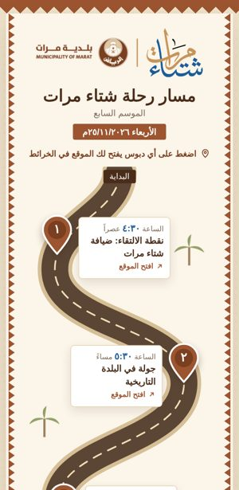
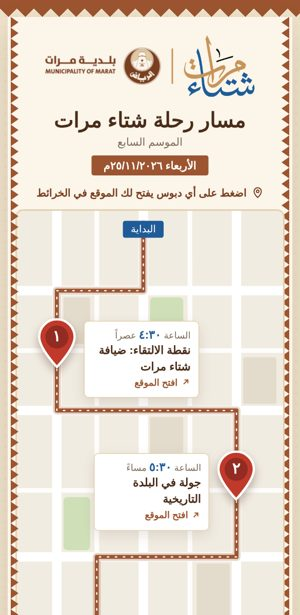
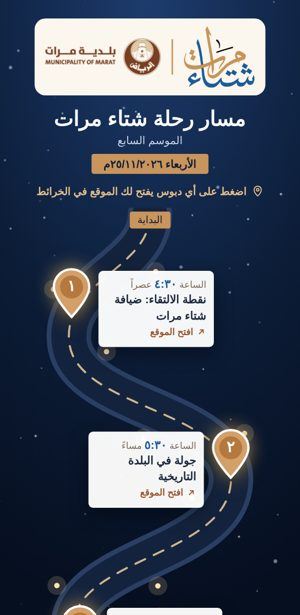
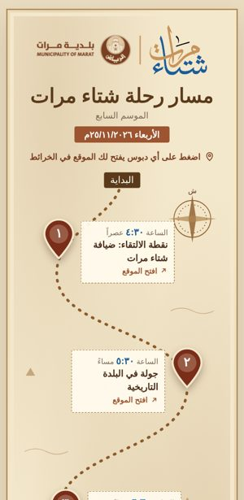
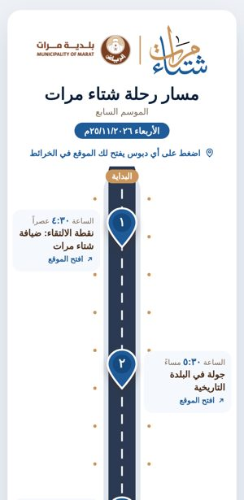
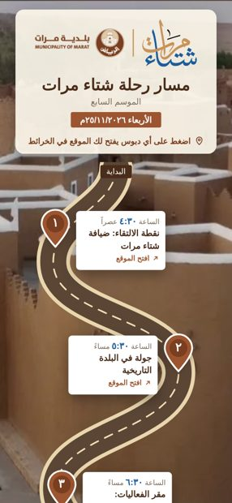

اضغط على أي تصميم لتجربته

طريق متعرّج بألوان الدعوة النجدية، وعلى جوانبه نخيل
جرّب التصميم
شوارع مثل الخرائط، والمسار مرسوم بين المحطات بدبابيس حمراء
جرّب التصميم
طريق ليلي بفوانيس مضيئة، وسماء فيها نجوم وثلج خفيف
جرّب التصميم
ورق قديم وبوصلة، والمسار نقاط متقطعة مثل خرائط الرحّالة
جرّب التصميم
تصميم حديث بألوان شعار شتاء مرات، وطريق مستقيم والمحطات على جانبيه
جرّب التصميم
صورة سوق المجلس في البلدة التاريخية خلفية كاملة، والطريق النجدي فوقها
جرّب التصميم